| Name | Image | Rarity | Type | Cost | Description |
|---|
| One For All |  | Uncommon | Attack | 1 | Deal 2 damage. Each time this card is played, permanently increase its damage by 2 (3). Exhaust. |
| Neurotoxin |  | Rare | Skill | 1 | Apply 1 Poison. Each time this card is played, permanently increase its poison by 2 (3). Exhaust. |
| Pacifist |  | Curse | Curse | 2 | While this card is in your hand you cannot play Attacks. |
| Collect |  | Special | Skill | 0 | Draw 3 (4) cards and Upgrade them. |
| Dark Harmony | 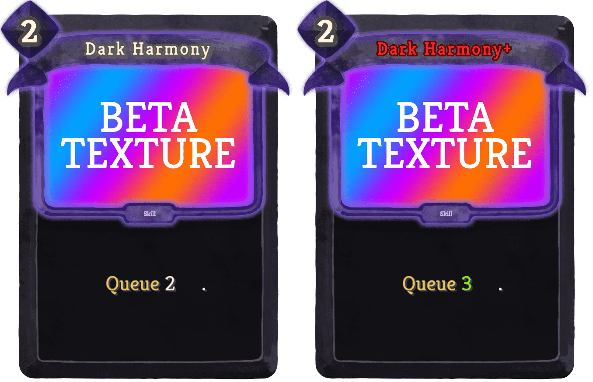 | Special | Skill | 2 | bard:Queue 2 (3) [WildNote] . |
| Deaths Touch |  | Special | Attack | 3 | Deal 25 (35) damage. Next turn, deal 25 (35) damage to ALL enemies. |
| Execution |  | Special | Skill | 2 (1) | Apply Shredded to an enemy. Exhaust. |
| Final Strike |  | Special | Attack | 2 | Deal 10 (15) damage. Deals an additional 5 damage for ALL of your cards containing Strike. |
| Fortify |  | Special | Skill | 1 | Gain 3 Block 5 (6) times. |
| Future Sight | 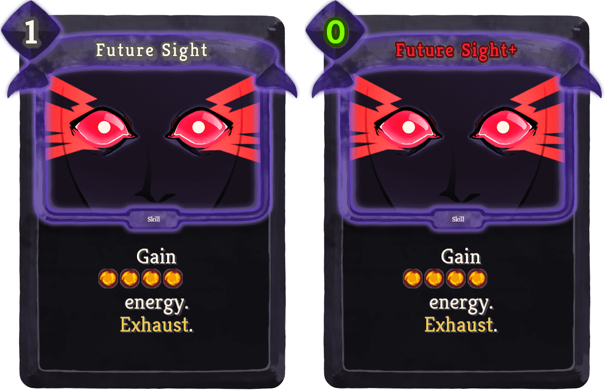 | Special | Skill | 1 (0) | Gain [E][E][E][E] energy. Exhaust. |
| Gouge |  | Special | Attack | 0 | Deal 5 (9) damage. Remove Artifact. Apply 2 (3) Weak and Vulnerable |
| Menacing |  | Special | Skill | 1 | The next (!M!) attack(s) you play stuns (stun) any enemy it hits (they hit) for 1 turn. Exhaust. |
| Neural Network |  | Special | Power | 1 | (Innate.)Draw 2 additional cards at the start of each turn. |
| Oblivion |  | Special | Attack | 1 | Deal 13 damage. Channel 2 (4) random Orbs. |
| Punishment |  | Special | Attack | 1 (0) | Deal 2 damage for each card in your draw, hand, and discard pile. |
| Seven Walls | 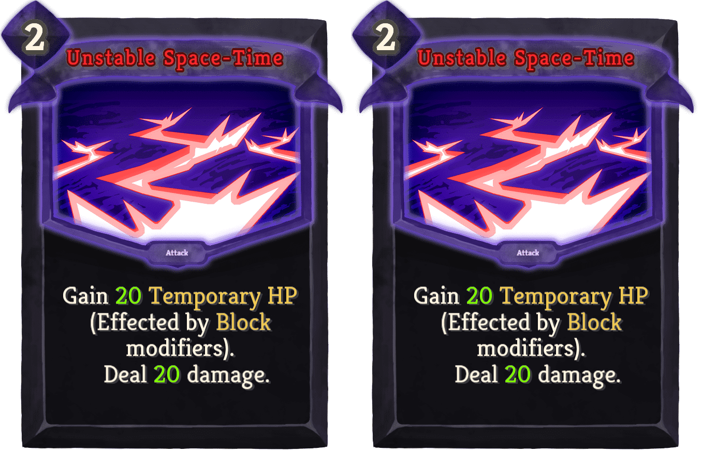 | Special | Attack | 2 | Gain 15 (20) (Temporary_HP (Effected by) Block (modifiers)). Deal 15 (20) damage. |
| Starlight |  | Special | Skill | 1 | Heal 10 (15) HP. Exhaust. |
| The Best Defense | 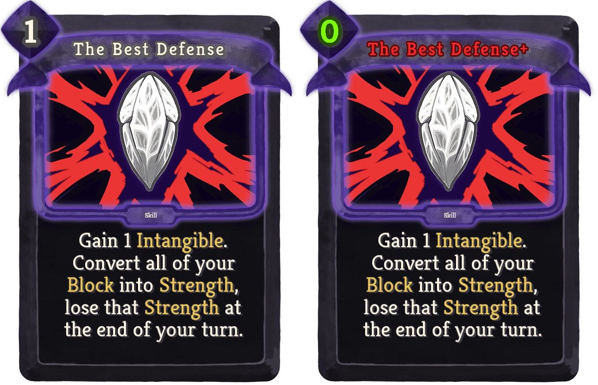 | Special | Skill | 1 (0) | Gain 1 Intangible. Convert all of your Block into Strength, lose that Strength at the end of your turn. |
| Ultimate Form |  | Special | Power | 5 | Gain 2 (3) Strength and Dexterity each turn. If you have orb slots gain 2 (3) Focus each turn. |
| Name | Image | Tier | Pool | Description | Flavor |
|---|
| Dark Rift | | Starter | | At the start of combat, add a random Black card to your draw pile. | It looks like a small galaxy! |
| Beetle Shell | 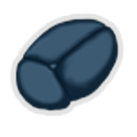 | Common | | Every 10th time you gain Block from a card, gain double the Block. | Hard as a rock. |
| Freezer | | Common | Blue | At the start of combat, channel1Frost orb. | It's cold to the touch. |
| Lucky Rock | 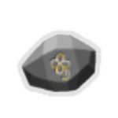 | Common | | Each time you play an attack card, you have a 5% chance to gain Critical. | It's feels smooth. |
| Puzzle Cube |  | Common | | At the start of each turn, PuzzleCube picks a random card in your draw pile, if you play that card, draw a card. | Timing... |
| Satchel | 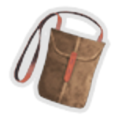 | Common | | At the end of each turn Retain 1 card. | It's not a purse! |
| Bottled Mercury | 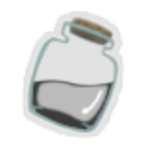 | Uncommon | | Upon pickup choose a card, when it is played, if it is an Attack, gain 1Strength, if it is a Skill, gain 1Dexterity, if it is a Power, gain 2Focus. | Tastes real bad... |
| Bottled Soul |  | Uncommon | | Upon pickup, choose an Exhaust card. Whenever you play that card, it no longer Exhausts. | A broken bottle... A broken soul... |
| Checkered Pen |  | Uncommon | | Whenever you play a card, deal 1 damage to a random enemy. | Secrets revealed... |
| Empowering Shard | 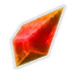 | Uncommon | | For each act you climb gain 1Strength at the start of combat. | It feels like it holds great power... |
| Eraser | 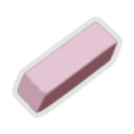 | Uncommon | | Right click during combat to activate.Usable only once per combat. Restart an elite combat against a different elite. The enemies will be stronger. Can be used 3 times. | Chewy! |
| Focusing Shard | 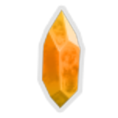 | Uncommon | | For each act you climb Upgrade a random card at the start of combat. | Sharp! |
| Midas Blood | 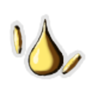 | Uncommon | | Whenever you take HP damage, gain 2 gold. | Taking damage never felt so good. |
| Shielding Shard |  | Uncommon | | For each act you climb gain 3TempHP at the start of combat. | Nice and cool. |
| Soldering Iron |  | Uncommon | Blue | Every 3 orbs you channel in one turn, gain 1 Orb slot | OUCH! Hot! |
| Warding Shard | 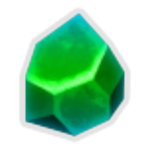 | Uncommon | | For each act you climb gain 1Dexterity at the start of combat. | It's unbreakable! |
| Cursed Dice |  | Rare | | Can only be used once. When you would die, shuffle your hand and discard pile into your draw pile, you no longer take damage. If you win before you empty your draw pile and hand, heal 35% max hp. Otherwise you die! | Onward unto death! Die like a nail hammered into a coffin! |
| Golem's Mask | 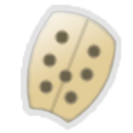 | Rare | | On the first turn of combat, gain Golem'sMight. | Just like the golem, slow and steady. |
| Joker Card | 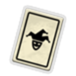 | Rare | | Every 15th card you play is played twice. | Takes the form of any other card. |
| Lychee Nut | | Rare | | Upon pick up, lose 25% of your max HP. At the start of combat gain 3Regen. | It's kinda sweet. |
| Magic Flask |  | Rare | | At campfires, the rest option may now be taken for free. This consumes 1 use. Starts with 3 uses. Kill bosses to gain 2 more uses. | The flames feel warmer... |
| Abe's Evil Pickle | | Special | | After combat, gain 6.5% interest on your gold. | Nothing is more evil than gold! |
| Black Egg |  | Special | | Right click to toggle. When activated the next floor's boss will be The Lord of Annihilation. | Something terrifying... contained... |
| Blank's Blanky |  | Special | | When resting at Rest Sites, heal to full. | It's more like a comforter. |
| Cubic Diamond | | Special | | Upon pick up, replace your starter relic with a random starter relic. | Feels weird. |
| Mutagenic Dexterity | 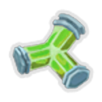 | Special | | Start each combat with 3Dexterity that is lost at the end of your turn. | The subject is able to endure more damage, only for a short while. |
| Burning Sword | | Boss | Red | At the start of each turn, gain Critical. The first Attack you play adds a Burn to your hand. | Bursting with powerful energy. |
| Cupcake |  | Boss | | Gain [E] at the start of your turn. After 3 turns, become De-Energized. | It's mostly icing. |
| Chaos | 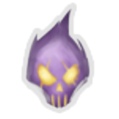 | Shop | | Upon pickup, replace every relic you hold with a random relic. | CHAOS!!! |
{kind=link}
{kind=link}
{kind=link}
{kind=link}